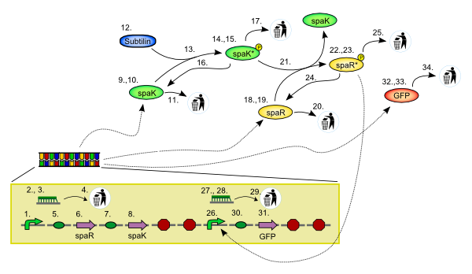
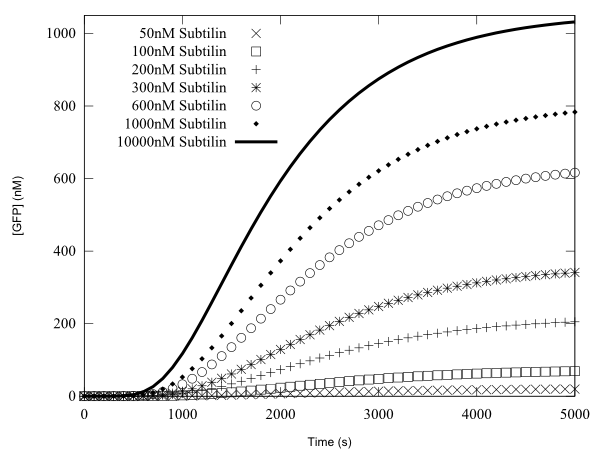

This is a Systems Model for the gold medal-winning machine 'Bugbuster' produced by the team from Newcastle University for the iGEM 2008 competition. Details about the project can be found here: http://2008.igem.org/Team:Newcastle_University.

A constitutive promoter leads to the production of proteins spaK and spaR. Subtilin activates spaK which in turn activates spaR. Activated spaR is a transcriptional regulator for GFP. The system senses and reports subtilin concentrations via GFP.
The Figure below shows the GFP time-course for the model, for various concentrations of initial Subtilin.

The entire model archive can be downloaded, or a ZIP file encapsulating all the files can been obtained from here.
The numbers on the schematic above relate to imported components. A map of the imported component architecture is as follows:
BugbusterModel.BugbusterModel_SVBM[
BugbusterModel.ChassisBacillus(Chassis_Bacillus(Template_Chassis_WellStirredBag))
BugbusterModel.Time(Time)
BugbusterModel.SpeciesInitialConcentrations
1. BugbusterModel.Bugbuster_Promoter1(Bugbuster_Promoter1(Template_Promoter_Constitutive))
2. BugbusterModel.RNA1(Template_Species)
3. BugbusterModel.RNA1_interface
4. BugbusterModel.Bioenvironment_Degradation_RNA1(Bioenvironment_Degradation_BugbusterRNA1(Template_RxR1P1))
5. BugbusterModel.Bugbuster_RBS_spaR_1(Bugbuster_RBS_spaR(Template_RBS))
6. BugbusterModel.Bugbuster_ProteinCDS_spaR_1(Bugbuster_ProteinCDS_spaR(Template_ProteinCDS))
7. BugbusterModel.Bugbuster_RBS_spaK(Bugbuster_RBS_spaK(Template_RBS))
8. BugbusterModel.Bugbuster_ProteinCDS_spaK(Bugbuster_ProteinCDS_spaK(Template_ProteinCDS))
9. BugbusterModel.spaK(Template_Species)
10.BugbusterModel.spaK_interface
11.BugbusterModel.Bioenvironment_Degradation_spaK(Bioenvironment_Degradation_spaK(Template_RxR1P1))
12.BugbusterModel.Subtilin
13.BugbusterModel.spaKActivation(Bioenvironment_RxR2P1_spaKActivation(Template_RxR2P1)
14.BugbusterModel.spaKactive(Template_Species)
15.BugbusterModel.spaKactive_interface
16.BugbusterModel.Bioenvironment_Dephosphorylation_spaKactive(Bioenvironment_Dephosphorylation_spaKactive(Template_RxR1P1))
17.BugbusterModel.Bioenvironment_Degradation_spaKactive(Bioenvironment_Degradation_spaKactive(Template_RxR1P1))
18.BugbusterModel.spaR(Template_Species)
19.BugbusterModel.spaR_interface
20.BugbusterModel.Bioenvironment_Degradation_spaR(Bioenvironment_Degradation_spaR(Template_RxR1P1))
21.BugbusterModel.spaRActivation(Bioenvironment_RxR2P1_spaRActivation(Template_RxR2P1)
22.BugbusterModel.spaRactive(Template_Species)
23.BugbusterModel.spaRactive_interface
24.BugbusterModel.Bioenvironment_Dephosphorylation_spaRactive(Bioenvironment_Dephosphorylation_spaRactive(Template_RxR1P1))
25.BugbusterModel.Bioenvironment_Degradation_spaRactive(Bioenvironment_Degradation_spaRactive(Template_RxR1P1))
26.BugbusterModel.Bugbuster_Promoter2(Bugbuster_Promoter2(Template_Promoter_Inducible))
27.BugbusterModel.RNA2(Template_Species)
28.BugbusterModel.RNA2_interface
29.BugbusterModel.Bioenvironment_Degradation_RNA2(Bioenvironment_Degradation_BugbusterRNA2(Template_RxR1P1))
30.BugbusterModel.Bugbuster_RBS_GFP(Bugbuster_RBS_GFP(Template_GFP))
31.BugbusterModel.Bugbuster_ProteinCDS_GFP(Bugbuster_ProteinCDS_GFP(Template_ProteinCDS))
32.BugbusterModel.GFP(Template_Species)
33.BugbusterModel.GFP_interface
34.BugbusterModel.Bioenvironment_Degradation_GFP(Bioenvironment_Degradation_GFP(Template_RxR1P1))
]
where the following code is used:
M[A] Model M contains A
A(B) A imports a component that is referred to as B
F.S Component or model is named S, held in file named F
D Component is named D, held in file name D (i.e. shorthand for D.D)
Several of the Parts used in this model have their DNA stored in the Repository of Standard Biological Parts. They are as follows:
The promoter for spaR and spaK (number 1. above): Part BBa_K104002.
The RBS for spaR (number 5. above): Part BBa_K104003.
The CDS for the spaR protein (number 6. above): Part BBa_K104004.
The RBS for spaK (number 7. above): Part BBa_K104005.
The CDS for the spaK protein (number 8. above): Part BBa_K104006.
The promoter for GFP (number 26. above): Part BBa_K104008.
The RBS for GFP (number 30. above): Part BBa_K104009.